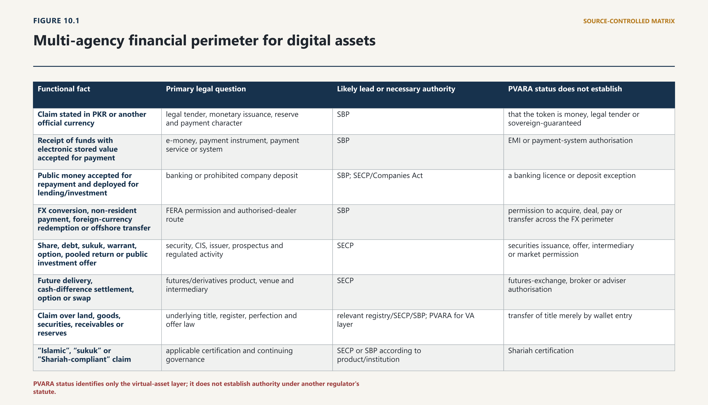
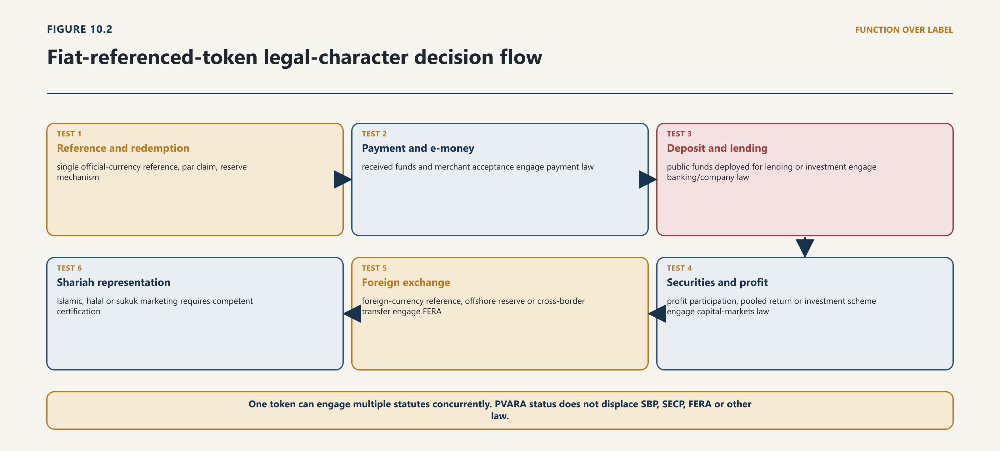

Chapter Ten · Part 3
The Monetary and Financial Perimeter
The Future of Digital Assets in Pakistan
10.1 One Product, Several Legal Perimeters
10.1.1 Money, payment, foreign exchange, banking, securities and futures
1
The expression “virtual asset” answers only one legal question. It does not decide whether the same arrangement is money, a payment instrument, electronic money, a deposit, foreign exchange, a security, a collective investment scheme, a futures contract, a commodity exposure or a Shariah-compliant financial product. Those conclusions turn on the rights promised, the funds received, the purpose for which they are used, the persons to whom they are owed, the market in which they are offered and the infrastructure through which they settle.

10.1.2 Joint characterisation and institutional allocation
2
Pakistan’s Virtual Assets Act 2026 recognises that division, but not perfectly. Section 2(2)(b) excludes securities, derivatives, collective investment schemes, depositary receipts and other traditional financial instruments within SBP or SECP jurisdiction. Section 3 defines a virtual asset broadly, excludes fiat currency and financial assets regulated under other law, but then adds an exception where such assets are represented, issued or transferred using distributed-ledger technology. Section 5 says that the Act is additional to other law, expressly preserves the Foreign Exchange Regulation Act 1947 from its inconsistency rule and places virtual assets and tokenisation primarily with PVARA “in coordination with” other relevant regulators. Section 9(f) correspondingly requires PVARA to consult SBP or SECP when an asset exhibits features within their mandates.1
3
Those provisions cannot sensibly mean that putting a share, rupee claim or derivative on a blockchain removes it from SBP or SECP law and delivers it exclusively to PVARA. That reading would make the specific exclusion in section 2(2)(b) largely self-defeating, contradict section 5’s cumulative structure and allow technology to repeal substantive financial law by implication. Until Parliament corrects the text, the defensible construction is narrower: section 2’s specific financial-instrument exclusion controls where the instrument already falls within SBP or SECP jurisdiction; the DLT words in section 3 ensure that genuinely new DLT representations can still be assessed as virtual assets and that PVARA can regulate additional virtual-asset risks through lawful coordination. They do not erase the underlying financial character.
4
The practical method is therefore a permission stack. Apply the Chapter 4 five-object test—asset, activity, actor, infrastructure/control and legal connection—then ask the financial-perimeter questions separately.
| Functional fact | Primary legal question | Likely lead or necessary authority | PVARA status does not establish |
|---|---|---|---|
| Claim stated in PKR or another official currency | legal tender, monetary issuance, reserve and payment character | SBP | that the token is money, legal tender or sovereign-guaranteed |
| Receipt of funds with electronic stored value accepted for payment | e-money, payment instrument, payment service or system | SBP | EMI or payment-system authorisation |
| Public money accepted for repayment and deployed for lending/investment | banking or prohibited company deposit | SBP; SECP/Companies Act | a banking licence or deposit exception |
| FX conversion, non-resident payment, foreign-currency redemption or offshore transfer | FERA permission and authorised-dealer route | SBP | permission to acquire, deal, pay or transfer across the FX perimeter |
| Share, debt, sukuk, warrant, option, pooled return or public investment offer | security, CIS, issuer, prospectus and regulated activity | SECP | securities issuance, offer, intermediary or market permission |
| Future delivery, cash-difference settlement, option or swap | futures/derivatives product, venue and intermediary | SECP | futures-exchange, broker or adviser authorisation |
| Claim over land, goods, securities, receivables or reserves | underlying title, register, perfection and offer law | relevant registry/SECP/SBP; PVARA for VA layer | transfer of title merely by wallet entry |
| “Islamic”, “sukuk” or “Shariah-compliant” claim | applicable certification and continuing governance | SECP or SBP according to product/institution | Shariah certification |
5
“Lead regulator” must be used with care. It can mean the authority that receives the file, coordinates the timetable or supervises the dominant risk. It cannot mean an authority may waive another statute. Where several perimeters are engaged, the lawful output is a coordinated set of determinations and conditions. An applicant should not be made to submit contradictory factual accounts to different regulators, but neither should administrative convenience collapse distinct legal tests.
6
This method prevents two symmetrical forms of arbitrage. The first is escape by tokenisation: a promoter calls a share or deposit a token to avoid SECP or SBP. The second is escape from virtual-asset safeguards: a promoter obtains a financial permission for one component and assumes that custody, exchange, wallet or issuance risks need no PVARA analysis. Both fail for the same reason. Law follows substance and performed function; a digital wrapper does not answer the whole transaction.
10.2 State Bank of Pakistan Act
10.2.1 Central-bank functions and monetary authority
7
Private instruments can perform some monetary functions without becoming sovereign money. A token may be used as a unit of account within a platform, as a medium of exchange between willing parties, as a store of value, as collateral or as a settlement asset. None of those uses by itself gives the holder a statutory right to compel acceptance, converts the issuer into the State Bank or attracts the federal guarantee attached to bank notes.
8
The governing line is express. The VA Act defines an official or fiat currency as currency issued by a central bank or monetary authority and recognised as legal tender under the issuing country’s law. It defines an FRT as a virtual asset that purports to maintain stable value relative to one official currency and is redeemable at par by its issuer. The same Act says that virtual assets are not legal tender. Under sections 24 and 25 of the State Bank of Pakistan Act 1956, SBP has the sole right to issue bank notes payable to bearer on demand in Pakistan, and those bank notes are legal tender for their stated amount and federally guaranteed. Section 35 separately restricts unauthorised bearer-on-demand bills, notes and engagements.2
9
An FRT is therefore not a digital rupee merely because it references PKR. It is a private claim whose issuer promises parity. The promise may be valuable and highly liquid; it remains exposed to issuer performance, reserve quality, custody, operational continuity and legal enforceability. “One token equals one rupee” describes a contractual or programmatic target. It is not an SBP guarantee, deposit-insurance statement or declaration of legal tender.
10.2.2 Limits of statutory inference for private digital assets
10
That distinction must appear in product design and disclosure. A PKR-referenced token should state:
the legal identity and licence/registration status of the issuer;
whether the holder has a direct redemption claim, against whom and in what forum;
the permitted redemption currency, route, minimum, timing, fees and suspension grounds;
the nature, currency, custodian and legal segregation of reserves;
whether the product is an SBP-authorised payment instrument or e-money product;
whether any statutory finality, deposit protection or government guarantee applies; and
the consequences of de-pegging, bank closure, reserve shortfall, insolvency or a frozen wallet.
18
The answer is equally important for foreign-currency-referenced tokens. Reference to US dollars, euros or another official currency does not make the token legal tender in Pakistan, nor necessarily legal tender in the reference jurisdiction. It describes the unit and redemption promise. Its acquisition, conversion, payment and cross-border use may engage FERA, but its label does not by itself complete that analysis.
19
Monetary sovereignty does not require banning every privately issued value instrument. Pakistan already accommodates bank deposits, e-money and other claims denominated in currency without treating them as bank notes. It requires the law to distinguish the sovereign unit from private liabilities, preserve SBP’s powers over monetary and payment stability, prevent misleading equivalence and control the channels through which private claims become widely used for payment or settlement. The correct regulatory question is not whether the software “looks like money.” It is what the holder is owed, who owes it, how widely it circulates and what happens when redemption is demanded.
10.3 Foreign Exchange Regulation Act 1947
10.3.1 Foreign exchange, payments and value transfer
20
FERA is not a peripheral overlay. The VA Act’s section 5 expressly removes it from the rule under which the later Act prevails over inconsistent law. That deliberate carve-out means PVARA cannot treat a VA licence, FRT approval, wallet transfer or offshore listing as permission to acquire, deal in, remit or settle foreign exchange.
21
FERA’s architecture is transactional and permission-based. Its definitions cover currency, foreign currency, foreign exchange, securities and transfers, including transfers by loan or security. Section 3 empowers SBP to authorise dealers subject to general or special conditions and requires an authorised dealer to satisfy itself that a proposed transaction is not designed to evade the Act. Section 4 restricts a Pakistani resident, absent permission or an authorised-dealer route, from buying, borrowing, selling, lending or exchanging foreign exchange with a person who is not an authorised dealer. Section 5 regulates specified payments, credits and transfers involving persons resident outside Pakistan. Section 13 restricts the issue, transfer and registration of securities involving non-residents without permission. The Act also extends to Pakistani citizens and persons in government service wherever they may be.3
22
The Foreign Exchange Manual and SBP directions provide the operational channels through authorised dealers. They remain necessary because a blockchain address is not an authorised dealer, a smart contract is not an SBP permission and a stablecoin issuer is not entitled to invent a parallel convertibility route. The relevant questions must be asked for each leg, not for the product in the abstract.4
10.3.2 Resident, non-resident and offshore transaction legs
| Transaction leg | FERA question | Required evidence |
|---|---|---|
| Resident purchases a foreign-currency-referenced token with PKR | Is foreign exchange being acquired or exchanged; who is the counterparty and authorised dealer? | bank/authorised-dealer route, purpose, permission or applicable general authority |
| Issuer receives foreign currency into offshore reserves | Who acquires and owns the FX; where is it held; what permission governs transfer and retention? | issuer/reserve entity, account, authorised dealer, currency and repatriation terms |
| Holder redeems into foreign currency | Is the holder entitled to receive FX; through which authorised channel and for what permitted purpose? | holder status, redemption instruction, bank route, documentary purpose and limits |
| Token sent to or received from non-resident | Is value/payment/property transferred to or for a non-resident and does an authorisation apply? | residency, payer/payee, wallet attribution, consideration, source and destination |
| Tokenised security transferred to non-resident | Does section 13 or related securities/portfolio-investment control require permission or registration? | instrument status, issuer register, beneficial holder, price, market and approved route |
| Offshore VASP settles a Pakistani customer trade | Which resident acquires, pays or transfers value; where does the PKR/FX leg occur? | contracting entities, customer agreement, bank accounts, order/settlement path and licences |
23
A foreign-currency reference is not automatically synonymous with statutory “foreign exchange.” The token may be a contractual claim, a security, e-money, a commodity-linked representation or an unbacked virtual asset depending on facts. Nor is every on-chain transfer automatically a prohibited remittance. The correct conclusion is narrower and more demanding: the acquisition, conversion, payment, security and non-resident legs must be analysed under FERA’s definitions and authorisations. If one leg is impermissible, PVARA approval of another leg does not cure it.
24
FRT reserves make this especially important. Section 31 of the VA Act requires 100 per cent HQLA or other prescribed reserve backing, a segregated reserve, par redemption and consultation with SBP on reserve arrangements. It does not state the permissible reserve currency, the authorised-dealer route, whether offshore assets may be held, which resident owns them, how interest or gains are treated, how FX liquidity is sourced or whether redemption into a foreign currency is allowed. Those are not drafting details. They determine whether the statutory stablecoin promise can lawfully operate.
25
Cross-border transfers also create a false intuition about location. A transfer between two addresses may be technically borderless but legally connected to the residence of the parties, the place from which instructions are given, the issuer’s reserve account, the exchange, the bank, the settlement entity and the purpose of payment. Wallet location cannot be reduced to server location. A licensing file should identify the resident and non-resident persons, contracting entities, beneficial ownership, fiat accounts, currency, source and destination of funds, exchange rate, fee, purpose, chain, custodian and redemption point.
26
The risk is not limited to illicit finance. Uncontrolled convertibility can affect capital controls, reserve management, monetary transmission, trade payments and the integrity of formal remittance channels. Conversely, a blanket assumption that every VA transfer is foreign exchange would overreach the statute and make domestic transfers legally unintelligible. A joint PVARA–SBP rule should therefore classify common fact patterns and require authorised-dealer routing where the legal elements are present.
27
The current SBP banking circular supplies an important but limited bridge. It permits regulated entities to bank PVARA-licensed VASPs subject to strict controls, while stating that they remain responsible for all SBP law, including foreign-exchange regulation. It does not authorise the customer’s underlying FX transaction. The bank must still understand the VASP’s markets, activity, customer base and geography, and must refuse or escalate a transaction that lacks the necessary FERA basis.5
28
The corrective framework should have five parts: a joint classification schedule for foreign-currency tokens and settlement legs; specified authorised-dealer channels; reserve-account and custody rules; reporting that connects bank records to wallet transfers; and a reasoned permission process for legitimate cross-border products. Innovation should occur within a visible convertibility architecture, not through an assumption that on-chain value sits outside exchange control.
10.4 Banking Companies Ordinance
10.4.1 Deposit-taking, banking business and prudential exposure
29
Banking enters the VA market in three different capacities: banks provide accounts and settlement to VASPs and customers; banks may seek their own exposure to VA products; and non-bank issuers may structure liabilities that resemble deposits or financing. Those questions must not be collapsed.
30
The statutory core of banking is accepting deposits of money from the public for lending or investment, repayable on demand or otherwise and withdrawable by cheque, draft, order or otherwise. Section 7 of the Banking Companies Ordinance 1962 lists forms of business a banking company may conduct; section 7(2) prevents it from engaging beyond those forms, section 8 controls use of “bank,” and section 9 restricts trading in goods except as authorised.6 The legal test is therefore not “does the token redeem?” A redeemable token becomes deposit-like when the issuer receives public money, owes repayment and uses the funds for lending or investment or otherwise enters the statutory banking business. Reserve backing, yield, liquidity transformation, withdrawal rights and marketing are material evidence; none is conclusive alone.
31
Company law supplies an additional protection. Section 84 of the Companies Act 2017 generally prohibits a company from inviting, accepting or renewing deposits from the public, subject to banking-company and notified exceptions. “Deposit” includes money deposited with and amounts borrowed by a company, but excludes stated categories including debenture funding, bank/financial-institution loans and genuine advances against ordinary sales of goods or services.7 A token issuer cannot avoid that provision by calling customer money “reserve contributions” or “purchase proceeds” if the economic and contractual substance is repayable public funding. Equally, a genuine prepaid purchase arrangement should not be converted into a deposit solely because it uses a token.
10.4.2 Custody, settlement and unauthorised banking risks
32
Stablecoin reserves create a special conflict. The VA Act permits HQLA or other prescribed assets and contemplates custody with an independent custodian or regulated financial institution. The SBP circular prohibits regulated entities from holding VA with own funds or customer deposits; it does not prohibit a bank from holding ordinary eligible reserve assets or cash as custodian. The reserve arrangement must therefore distinguish the bank’s custody of conventional assets from any holding or dealing in the token itself, and must address account ownership, beneficiary rights, set-off, reconciliation and access during issuer distress. Chapter 11 takes the proprietary and insolvency analysis further.
10.5 Payment Systems and Electronic Fund Transfers Act
10.5.1 Payment systems, operators and electronic transfer
33
A token can transfer value without being an authorised payment instrument. It can settle on a blockchain without obtaining statutory settlement finality. It can be redeemable without satisfying the definition of electronic money. The payment perimeter requires each of those propositions to be tested separately.
34
The Payment Systems and Electronic Fund Transfers Act 2007 is technologically broad. “Electronic Fund or Electronic Money” includes monetary value represented by a claim on the issuer, stored electronically or in a payment instrument, issued on receipt of funds at least equal to the value issued, accepted as payment by undertakings other than the issuer and usable for payments. A “Payment Instrument” is any tangible or intangible instrument enabling a person to obtain money, goods or services or otherwise make payment, subject to the stated negotiable-instrument exclusion. A “Payment System” includes systems relating to payment instruments, transfer, clearing, settlement, supervision, regulation and infrastructure. Section 3 gives SBP extensive powers over payment systems, service providers, operators and issuers.8
35
Those definitions create a structured test rather than an automatic conclusion.
10.5.2 Stable-value and wallet interfaces
36
The result is fact-sensitive. An unbacked token with no issuer claim may be used voluntarily for payment but fail the statutory e-money elements. A closed-loop token accepted only by its issuer may fall outside the third-party acceptance element and, if it satisfies every VA Act exclusion condition, may also sit outside the VA perimeter. A 100 per cent fiat-backed FRT with a direct issuer claim and broad merchant acceptance may closely resemble e-money, but SBP must determine whether and how the statutory and regulatory route applies. A token issued against credit or backed by securities can require a different analysis.
37
Section 24 requires an applicant seeking to become an EMI to apply to SBP and restricts the EMI to licensed activities. SBP’s revised 2023 EMI Regulations allow issuance, distribution and redemption of e-money payment instruments and specified payment services. They prohibit the business of banking, customer interest or returns, and unauthorised cross-border services. They also address safeguarding, technology, consumer protection and staged authorisation. An entity cannot substitute a PVARA issuance licence for the EMI route where its product falls within this perimeter.9
38
Transfer and settlement under Schedule I of the VA Act likewise do not constitute a free-standing SBP payment licence. A VASP may be licensed to move virtual assets for customers, but the PKR account, payment instruction, e-money liability, gateway or clearing system may be separately regulated. Conversely, a licensed EMI or payment-service provider does not thereby receive permission to exchange, custody or transfer virtual assets as a business.
39
Settlement finality requires particular care. Commercial parties often describe blockchain settlement as “final” after a chosen number of confirmations or under a protocol rule. That may be a valid contractual and risk-management convention. Statutory finality under section 21 of the PSEFT Act is different: the settlement rules of a Designated Payment System bind the operator and participants, and an entry or payment stated by those rules to be final and irrevocable receives the Act’s protection. Sections 10–11 require governance and operational arrangements, including rules for the time of finality and credit, liquidity and settlement risk. A DLT transaction does not receive that legal consequence merely because reorganisation is unlikely or a smart contract calls it final.10
40
This distinction determines insolvency and reversal risk. Protocol finality addresses technical probability. Contractual finality allocates rights between parties. Statutory finality protects designated-system settlement against specified reversal or stay consequences. A sound tokenised payment or securities system should state which layer applies, the exact moment at each layer and what happens if one occurs without the others.
41
Payment-system integration can be designed without forcing every on-chain transfer into a designated system. Three models are possible:
external settlement asset: a VASP transfer occurs outside the payment system and the PKR leg settles through banks; each leg has its own finality and failure rules;
connected infrastructure: a DLT platform connects to an SBP-authorised operator, EMI or bank, with legal finality attaching to the designated fiat leg and contractual/protocol finality to the token leg; or
designated DLT-connected system: SBP designates the relevant system or instrument and approves governance, participation, risk, settlement and finality rules.
45
Each model must address principal risk: one leg may complete while the other fails. Delivery-versus-payment or payment-versus-payment is not achieved merely because two messages are automated. The legal and technical conditions for simultaneous, conditional or reversible transfer must be documented.
46
Consumer protection follows the same separation. A user needs to know whether it holds money, e-money, a token claim or an unbacked asset; which institution owes redemption; which complaint and error-resolution route applies; whether mistaken transfers can be recovered; what fees and limits apply; and whether insolvency protection exists. Marketing a wallet as a “bank account” or a token balance as “cash” without those legal attributes would collapse critical distinctions.
47
The immediate reform is a joint product-classification and payment-bridge instrument. It should state when FRTs and wallets require EMI or payment-instrument approval; how client-money accounts connect to on-chain transactions; what data and reconciliation fields banks and VASPs must exchange; when SBP designation is required; and how technical, contractual and statutory finality interact. That instrument should operate alongside, not inside, the PVARA licence.
10.6 SBP Circular CL 10 of 2026
10.6.1 Banking services for licensed VASPs
48
SBP’s BPRD Circular Letter No 10 of 2026 now governs the immediate banking-access question and expressly replaces the 2018 prohibition. It creates a status-sensitive route:
| Customer/status | Permitted account position under the circular | Control consequence |
|---|---|---|
| PVARA NOC holder | bank may open a limited-purpose account enabling completion of licensing formalities | no VA-related transactional activity or expanded services until PVARA licence |
| PVARA-licensed VASP | SBP-regulated entity may provide accounts after obtaining and independently verifying a valid licence | enhanced due diligence, risk rating, monitoring and continuing compliance |
| Licensed VASP’s client money | separate PKR-denominated, non-remunerative CMA where applicable to authorised transactions | strict segregation; no commingling, cash deposit/withdrawal, collateral use or financing against CMA funds |
| Bank’s own balance sheet/customer deposits | bank may not invest, trade or hold VA using own funds or customer deposits | no proprietary or deposit-funded VA position under the current instruction |
49
This circular is enabling and restrictive at the same time. It ends the prior categorical account prohibition for duly licensed VASPs, creates a bankable transition account for NOC holders and permits a controlled PKR client-money rail. It does not deem every NOC holder licensed, authorise cash business, permit foreign-currency CMAs, allow banks to finance against customer money or open VA exposure on their balance sheets. A bank must obtain the licence and independently verify it with PVARA before onboarding or commencing licensed activity.11
50
The distinction matters because the public-market transition is incomplete. Where PVARA has granted only an NOC, the bank’s function is to enable formalities, not to treat the applicant as a trading venue. Where a licence exists, the bank must verify its activities and conditions rather than rely on a logo or group licence. If a VASP is licensed for one activity, the bank should not process flows that plainly depend on an unlicensed activity.
10.6.2 Customer due diligence, account controls and the limits of the circular
51
Prudential exposure is broader than direct holding. A bank can be exposed through operational deposits, client-money concentration, settlement timing, intraday credit, guarantees, reserve custody, outsourced technology, affiliated VASPs, collateral and reputational or conduct risk. The 2026 circular addresses some immediate controls but does not yet provide a complete prudential framework for those indirect exposures. Banks should map at least:
the VASP licence, business model, jurisdictions and customer risk;
daily account flows, concentration and settlement dependencies;
source and destination of PKR and any FX-related documentary basis;
whether funds are operational, customer, reserve or proprietary;
liens, set-off, insolvency, reconciliation and erroneous-transfer treatment;
exposure through affiliates, outsourcing, credit, collateral and service interruption; and
incident escalation between the bank, PVARA, SBP and FMU.
10.7 Banks in P2P Transactions
10.7.1 Banks as fiat payment rails rather than certifiers of the virtual-asset sale
59
The chapter’s banking conclusion is bounded. Not every stablecoin is a deposit, not every reserve account makes a bank the issuer and not every bank service to a VASP is prohibited. But PVARA authorisation does not license banking, excuse the company-deposit prohibition or permit a bank to ignore prudential and foreign-exchange duties. The classification must follow the liability and use of funds.
10.7.2 What a bank record proves and what it does not prove
60
That approach preserves regulatory authority without multiplying licences mechanically. Banks may operate regulated fiat rails and retain important evidence, but they do not certify token title or cure an unlicensed service. Sustainable perimeter resolution requires published allocation criteria, sequenced applications, shared facts and reasoned lead-regulator decisions.
10.8 Securities Act, Futures Market Act and SECP Act
10.8.1 Investment contracts, securities, derivatives and market infrastructure
61
A security token is not a new answer to the question “what is the instrument?” It is a method by which rights may be represented, issued, recorded or transferred. Classification begins with the holder’s legal and economic rights: equity, debt, profit participation, repayment, an option, a unit in pooled property, a depository entitlement or another investment claim. The network, token standard, wallet and smart contract matter to issuance, record integrity, custody and trading. They do not eliminate the right that the technology carries.
62
The Securities Act 2015 defines securities, in wording framed “in the case of listed instruments,” to include shares and stock; corporate debt such as bonds, notes, commercial paper and sukuk; government and public debt; modaraba, participation-term and term-finance certificates; subscription rights and options; units in collective investment schemes and trust funds; depositary-receipt rights; and instruments notified by SECP. It excludes futures contracts, bills of exchange, promissory notes and certificates of deposit from that definition. The Act separately defines an issuer as a person who has issued or proposes to issue a security and recognises electronic and digital records.12
63
The phrase “in the case of listed instruments” makes it unsafe to declare every privately offered token a statutory security solely by analogy. It is equally unsafe to infer that an unlisted share, debt claim or pooled investment becomes legally unregulated. Company law, the NBFC/CIS framework, private-placement rules and SECP’s notification and administration powers remain relevant. The proper response to an unclear or novel token is a reasoned SECP classification on the actual rights and offer, not importation of a foreign judicial test as if it were Pakistani legislation.
| Token feature | Potential financial character | Questions that decide the perimeter |
|---|---|---|
| voting, dividend, residual-asset or capital rights in a company | share/equity security | who is the company; was capital lawfully issued; whose name is in the statutory register/central depository; what class rights attach? |
| repayment of principal, fixed or floating return, security over assets | debt security, sukuk or other financing claim | who owes payment; what instrument creates the debt; is it secured; how is it offered and registered? |
| participation in revenue, profit or cash flow without company membership | debt, profit-participation, CIS or other notified instrument | are contributions pooled; who manages; what risk and control does the holder have; is return contractual or discretionary? |
| tokenised interest in a managed pool of VAs or RWAs | CIS/unit or managed investment product | are funds pooled; do participants lack day-to-day control; who is the manager/trustee/custodian; what NBFC permission applies? |
| right to acquire, sell or subscribe for another instrument | warrant or option; possibly futures/derivatives | what is the underlying, exercise mechanism, maturity and settlement method? |
| receipt representing rights in securities held by another | depositary receipt/custodian claim | who holds the underlying security; what records and rights connect holder to underlying? |
| “utility” access plus promised appreciation, buy-back or yield | fact-sensitive mixed product | what enforceable rights, funding use, marketing and secondary-market arrangements exist? |
64
The table is a referral tool, not a catalogue of deemed outcomes. A token can contain several rights. A purported utility function does not negate a debt or pooled-return promise. Conversely, speculative resale expectations created only by independent market activity do not, without more, rewrite the issuer’s legal obligations. The file must separate contractual rights, marketing statements, economic incentives, governance powers and the conduct of intermediaries.
65
Once a security or investment product is identified, at least four separate SECP questions arise.
66
Issuance and offer. Sections 87–95 of the Securities Act regulate public offers, prospectus approval and publication, advertisements, liability and specified offers outside Pakistan. A PVARA whitepaper or IVO approval is not a prospectus approval, and a prospectus does not replace PVARA issuer status where a separate VA layer lawfully remains. Private placement is not a marketing label; it depends on the applicable investor, number, invitation and media conditions. Fractionalisation can expand the number and class of investors and turn what was once a private asset sale into a capital-market proposition.13
67
Regulated activity. Sections 63–65 identify securities broking, advice, management, share registration, credit rating, balloting, underwriting, debt-securities trusteeship and notified activities as licensed businesses. A VASP licensed for broker-dealer, advisory, management, exchange or issuance services does not automatically obtain the corresponding securities permission. The reverse is also true: a securities broker does not receive custody or exchange permission for non-security virtual assets merely through its SECP licence.
68
Collective investment. Token funds and fractional structures can pool contributions into securities, VAs, receivables, property or mixed assets under professional management. Current SECP NBFC regulations govern collective-investment and asset-management structures. The questions include pooling, the participants’ day-to-day control, the manager’s discretion, the trust or company vehicle, valuation, custody, redemption and distribution. Calling every wallet a “separate vault” does not defeat pooling if the economic portfolio and management are common. Nor does every jointly owned asset become a CIS; the managed arrangement must be established under the applicable definition and facts.14
69
Market and infrastructure. Secondary trading can engage a regulated market, exchange, broker, clearing house, central depository, registrar and customer-asset regime. The Securities Act treats customer assets as property for which the regulated person must account and requires separation and trust-account protection in the relevant provisions. An on-chain venue cannot assume that automated matching, peer-to-peer execution or a decentralised label removes the regulated function. The inquiry is who admits instruments, sets rules, controls access, routes orders, collects fees, operates front ends, can intervene and performs settlement.
70
Tokenised company securities illustrate why the ledger cannot become a parallel title fiction. Under the Companies Act 2017, bearer shares and bearer equity/debt securities are prohibited. Shares and other securities are movable property transferable under the company’s articles; a compliant physical or book-entry certificate is prima facie evidence of share title. Section 72 provides for book-entry shares according to SECP notification and procedure. Transfer, membership and the register of members are governed by sections 74 and 118–129; the register is itself prima facie evidence of matters required to be entered.15
71
Accordingly, a wallet entry can have one of three lawful roles:
72
it can be an operational mirror of the controlling company/central-depository record;
73
it can form part of an authorised integrated record, if company, depository and SECP rules make the DLT entry legally operative; or
74
it can be a contractual token claim against an issuer or nominee without itself making the holder a company member.
75
The issuer must say which role applies. If the statutory register names a custodian while tokens circulate among beneficial users, the documents must identify whether token holders have direct company rights, beneficial claims, contractual rights against the custodian or only an economic exposure. The answer affects voting, dividends, notices, transfers, succession, liens, attachment and insolvency. Chapter 11 examines the property consequences; this chapter establishes that the financial product cannot be offered on a false account of the legal record.
76
SECP’s 2020 position paper anticipated many of these issues. It distinguished utility and security tokens, identified ownership, profits, cash flows and payment rights as possible security-token features and explored primary and secondary platform models. It expressly presented policy options and questions for consultation. It remains useful evidence that tokenised securities were understood as a capital-market issue before the 2026 Act; it is not operative law, an exemption or an approval route.16
77
The regulatory objective is not to force every token onto a securities exchange. It is to prevent the same investment right from receiving weaker protection merely because it is represented differently. Where a token is a security, SECP law should control issuance, offer, intermediary and market structure. PVARA should address any additional virtual-asset functions—such as custody of control instruments or exchange of other VAs—only through a stated concurrent permission. The user should receive one product disclosure showing both layers rather than two regulatory documents that conceal the whole transaction.
10.8.2 Regulatory overlap and functional classification
78
The VA Act expressly excludes derivatives within SBP or SECP jurisdiction, while Schedule I includes virtual-asset derivatives services. Those provisions require allocation, not duplication by assertion. The underlying reference can be a VA; the legal product can still be a futures or derivative contract governed by SECP law.
79
The Futures Market Act 2016 defines derivative contracts to include forwards, options, swaps and classes prescribed by SECP. A futures contract includes an arrangement for future delivery of a specified quantity of a commodity, security or financial instrument at a specified future time and price, or an arrangement settled by the difference between the agreed and future value, together with prescribed classes and related options. A financial instrument includes currency, currency and interest-rate indices, commodities indices, bond indices and notified instruments. “Commodity,” for the Act’s purposes, covers stated agricultural, livestock, fishery, forestry, mining and energy goods and processed products, plus notified goods or products.17
80
This yields four distinctions:
81
a spot purchase and immediate transfer of a VA is not a futures contract merely because price is volatile;
82
a cash-settled contract on the future price of bitcoin, an FRT, an index or a tokenised asset can be a futures/derivative product even if no token is delivered;
83
a token representing a present claim to stored gold or another good is not automatically a futures contract, but a future-delivery, option, swap or difference-settlement layer may be; and
84
calling every VA a “commodity” does not apply the Futures Market Act’s defined commodity category or answer securities, payment or VA classification.
85
Sections 3 and 46–48 separately regulate the operation of a futures market and the businesses of futures adviser, broker and representative. A PVARA derivatives-service permission cannot authorise an SECP-regulated futures exchange or broker. PVARA may still have a role where the service involves custody, transfer or exchange of the underlying VA, or where a provider offers a product not within the SECP perimeter. That role must be identified, not presumed.
86
Perpetual and leveraged products make the overlap acute. No maturity label does not end the inquiry if positions are margined, track a reference price and settle gains and losses. The file should identify the legal contract, reference asset/index, leverage, funding payment, margin, collateral owner, liquidation rule, price source, venue, counterparty, clearing and loss allocation. “Decentralised perpetual” is a technical description; it is not a statutory exemption.
87
The commodity interface also needs caution for ARTs. A token may reference gold, energy, agricultural goods or inventory. PVARA can regulate the ART issuer and reserve representation where the Act applies. The law governing warehouse receipts, title, inspection, grading, delivery, commodity trading and any future-value contract remains separate. The token cannot prove that the represented goods exist, are unencumbered or are deliverable. Those facts require custody, audit and underlying-market evidence.
88
The corrective instrument should assign VA-referenced forwards, options, swaps, futures, perpetuals, leveraged spot products and commodity-linked ARTs through a joint PVARA–SECP taxonomy. It should specify which regulator approves the product, venue and intermediary, how margin and customer assets are held, which market-abuse regime applies and how duplicate reporting is reconciled. The answer should turn on product and performed function, not which portal received the first application.
10.9 Stablecoins and Fiat-Referenced Tokens
10.9.1 Reserve, redemption, payment and investment functions
89
An FRT is the clearest example of a product that cannot be governed by one label. Under the VA Act it is a virtual asset that maintains stable value relative to one official currency and is redeemable at par by its issuer. Section 31 requires 100 per cent HQLA or other prescribed backing held as a segregated reserve, redemption at par without undue delay, audited reserve disclosure, AML/CFT/CPF and sanctions controls, holder protection in insolvency and risk-based additional requirements. PVARA is to consult SBP on reserve arrangements.18
90
Those requirements establish a serious reserve-backed VA category. They do not decide the legal character of every transaction involving it.
91
For prudential design, reserve sufficiency and liquidity are related but different. Eligible assets may satisfy a nominal backing rule yet be unavailable, concentrated, encumbered, mismatched in currency or maturity, or incapable of sale without material loss during a run. A Pakistan framework should therefore specify redemption outcomes, reserve ownership and custody, eligible-asset quality, concentration, liquidity horizons, stress testing, contingency funding, disclosure and coordinated run management. This chapter does not prescribe a fixed banking-style liquidity ratio; any ratio remains a design option requiring legal, institutional and economic fit analysis.
92
The first unresolved issue is the redemption obligor. The Act defines the issuer through origin, supply, reserves and governance and requires redemption by that issuer. A distributor, exchange or wallet should not imply that it owes par redemption unless it has assumed that obligation. The whitepaper and customer terms should identify the legal debtor, governing law, currency, authorised payment route, minimum, fee, timing, suspension, complaint and enforcement forum.
10.9.2 Monetary sovereignty and cross-border exposure
93
The second is reserve legality and quality. “100 per cent” is a valuation statement, not a complete safeguard. The regulations must determine eligible assets, currency matching, duration, credit and concentration limits, valuation time, haircuts, accrued income, encumbrance, custody, account ownership, reconciliation, attestation and disclosure. If reserves are held offshore or in foreign currency, FERA permissions and access in stress become central. If reserves contain the issuer’s affiliate obligations or volatile assets, nominal coverage can coexist with run risk.
94
The third is segregation and holder priority. The Act’s segregated-reserve definition contemplates assets held in the issuer’s name, a trust or special vehicle for token holders and says the issuer or creditors cannot claim them. Section 31 also requires prioritised holder protection in insolvency. Those provisions express an intended outcome but do not by themselves resolve every proprietary, trust, conflict-of-laws and resolution question. Chapter 11 tests whether the custody and insolvency architecture delivers that outcome. This chapter requires the issuer to disclose the chosen legal structure and avoid equating operational separation with bankruptcy remoteness.
95
The fourth is payment and banking character. If the holder has an electronically stored claim, the token is issued for received funds and is broadly accepted for payment, the PSEFT/EMI perimeter may be engaged. If funds are accepted from the public for repayment and deployed for lending or investment, the banking/deposit perimeter may be engaged. Section 31’s permission to hold prescribed reserve assets cannot be read as an implied exemption from either regime.
96
The fifth is currency and cross-border convertibility. A PKR FRT should normally redeem through permitted PKR banking channels. A foreign-currency FRT must state whether a Pakistani resident can lawfully buy and redeem it, whether redemption is in PKR or FX, how the exchange rate is set and which authorised dealer executes the transaction. An offshore reserve or exchange listing cannot become a private capital-control exception.
97
The sixth is systemic scale. A widely used FRT can concentrate customer money, connect multiple banks and VASPs, transmit runs across reserve assets and function as settlement infrastructure. Section 33 of the VA Act permits enhanced requirements for significant issuers, but final rules must connect significance to circulation, transaction volume, reserve concentration, payment use, interconnectedness and redemption stress. PVARA should not assess those indicators without SBP.
98
The legal position has changed since the earlier consultation-stage reading. The Act supplies the FRT definition and core duties, and the notified PVARA Regulations now supply the controlling subordinate framework. SBP’s current circular supplies bank accounts for licensed VASPs and preserves FERA; it is not by itself an FRT issuance or payment approval. No promoter should market a PVARA NOC, sandbox admission or bank account as proof that an FRT may be publicly issued and used for payment unless the controlling law and notified permissions establish that consequence.
99
Pakistan therefore needs a joint FRT rulebook before general public launch. It should contain a dual PVARA–SBP classification, issuer status, reserve and custodian criteria, authorised-dealer route, payment/EMI determination, redemption standards, audit and attestation, run and recovery plans, disclosure, significant-issuer supervision and failure treatment. The aim is not two unrelated licences. It is a single coordinated product decision in which each authority exercises its own power and the public can see the whole permission stack.
10.10 Tokenised Real-World Assets
10.10.1 Re-entry into property, securities and secured-transactions law
100
The VA Act defines an ART broadly: a virtual asset representing, directly or indirectly, ownership rights, claims or economic interests—including income or returns—in one or more underlying assets, or designed to maintain value by reference to those assets. Section 32 requires the prescribed reserve of underlying assets, custody, audited reserve disclosures, AML/CFT/CPF and sanctions controls, holder protection in insolvency and other prescribed safeguards.19

101
That category can include very different products: a direct fractional claim to property; a share in a special-purpose company; a debt note funded by receivables; a warehouse claim to goods; a fund unit; a contractual price tracker; or a token redeemable for an underlying asset. “RWA” does not tell the holder which one it owns.
102
The controlling step is to trace the legal chain:
103
Every arrow requires a document and a governing law. A land token does not amend the land register. A tokenised share does not replace the company or central-depository record. A gold token does not prove allocated bullion exists. A receivable token does not perfect assignment against the debtor or third parties merely because metadata identifies an invoice. An ART can faithfully represent a valid right, but only if the underlying right was created, transferred, perfected and maintained under the law governing that asset.
104
The financial perimeter re-enters according to the chosen structure. If the SPV issues shares or debt, securities and company law apply. If investors pool funds under discretionary management, the CIS/NBFC perimeter may apply. If the holder receives a future-price or cash-difference exposure rather than present title, the futures/derivatives perimeter may apply. If the token functions as widely accepted redeemable payment value, SBP questions arise. If a non-resident acquires the token or underlying security, FERA may apply.
10.10.2 Issuer, custodian and market-infrastructure obligations
105
Tokenisation also changes distribution risk. Fractionalisation and continuous trading can transform an asset historically sold to a small number of sophisticated parties into a retail product. Liquidity claims may exceed the liquidity of the underlying property; a twenty-four-hour token market cannot force a land registry, private-company board, warehouse or receivable debtor to operate continuously. The issuer should disclose transfer restrictions, valuation frequency, market hours, redemption gates, sale timelines, fees, encumbrances and the consequence of a mismatch between token and underlying records.
106
For each asset class, PVARA and the competent financial or registry authority should approve a legal-record hierarchy:
| Asset structure | Controlling legal record | Permissible token role |
|---|---|---|
| company share/debt | company/central-depository and securities records | authorised integrated record or mirror; not an unregistered bearer substitute |
| managed pool/fund | trust/company/NBFC records and custodian books | unit record only within approved CIS architecture |
| land/building interest | land/registration record and valid underlying instrument | evidence or contractual claim unless registry law integrates the token |
| allocated commodity | warehouse/custody record, inspection and allocation | transferable claim only to the extent underlying law and contract recognise it |
| receivable | valid assignment, debtor notice/acknowledgment and perfection record | representation of the assigned claim, subject to defences and priority |
| price exposure | product contract and clearing/market records | derivative/contract representation, not title to the reference asset |
107
This chapter stops at the financial-perimeter and record interface. Chapter 11 determines custody, ownership, trust, priority and insolvency consequences in depth. The immediate conclusion of this chapter is that an ART cannot remain solely inside the VA category. Its underlying right continually re-enters the company, securities, banking, futures, payment, property and registry laws that create and protect that right.
10.11 Inter-Regulator Perimeter Resolution
10.11.1 SBP, SECP, PVARA and other authorities
108
Pakistan’s institutional problem is not that no authority can identify risk. It is that several authorities can identify different risks in the same product, while the present statute does not supply a complete binding allocation procedure. Section 5(3) of the VA Act gives PVARA a primary role over VAs, VASPs, RWA tokenisation and blockchain technology “in coordination” with other regulators. Section 7 places the SBP Governor and SECP Chairperson on PVARA’s governing authority. Section 9 requires consultation where an asset exhibits SBP or SECP characteristics. These are coordination foundations, not a transfer of statutory mandates.20
109
A workable allocation system needs three layers.
110
First, product classification. One joint facts schedule should identify issuer, holder rights, received funds, use of proceeds, redemption, payment use, investment return, underlying asset, trading, leverage, custody, registers, currencies, residence and infrastructure. Each regulator should decide only the questions within its law, but decisions should use the same facts and expressly identify dependencies.
111
Second, permission sequencing. A lead intake office should state which applications can proceed in parallel and which depend on another determination. For example, PVARA cannot finalise an FRT reserve model whose SBP legality is unresolved; SECP cannot approve a tokenised public offer on the assumption that its VA custody is outside PVARA; a bank should not build transactional rails for an NOC-only applicant.
112
Third, continuing supervision and incidents. The protocol should allocate routine reporting, customer complaints, reserve shortfall, cyber incident, market abuse, FX breach, product variation, suspension and wind-down. One event can require several actions, but firms should not receive conflicting directions on the same operational fact.
10.11.2 Reasoned classification, coordination and review
113
Shariah claims need the same institutional discipline. The VA Act defines a PVARA Shariah Advisory Committee as a committee constituted for advice on Shariah matters. That definition does not say that PVARA’s classification or advice replaces the statutory financial-product certification administered by SECP or the governance applicable to SBP-regulated institutions.
114
Under the SECP Shariah Governance Regulations 2023, the regime is additional to other law. A company must obtain the required SECP declaration before claiming to be Shariah compliant. An issuer must obtain a Shariah-compliance certificate before claiming that a security is Shariah compliant, subject to stated deemed categories, and a person other than the issuer needs approval before making that claim. The Commission considers the security’s underlying structure and permissible mode of Islamic financing. The Regulations expressly exclude banking companies and other SBP-regulated institutions from their definition of Islamic financial institution.21
115
Three consequences follow.
The token label is irrelevant to certification. “Islamic token,” “digital sukuk,” “halal stablecoin” and “Shariah-compliant RWA” are regulated claims, not marketing adjectives.
Asset backing is not sufficient. The underlying business, financing mode, debt and income, reserve deployment, trading, late-payment treatment, purification, governance and audit must be assessed under the applicable framework.
Competence follows the institution and product. A security claim proceeds through SECP’s applicable certification; an SBP-regulated institution follows the applicable SBP framework; a PVARA committee can advise on the VA layer but should not produce a blanket substitute certificate.
119
An FRT demonstrates the point. One hundred per cent reserves and par redemption do not alone determine Shariah compliance. The analysis may need to consider the legal nature of the holder’s claim, reserve assets and income, fees, redemption, trading at premium or discount, use in financing, default and governance. This treatise does not pronounce a product permissible or impermissible. It identifies the competent process and the facts that process must examine.
120
Conflict resolution must also avoid an unsupported hierarchy. The following propositions are insufficient:
“PVARA is primary, therefore its decision prevails” ignores section 2’s exclusions, FERA’s express preservation and the statutory powers of SBP and SECP;
“the token is a security, therefore PVARA disappears” may ignore additional VA custody, transfer or exchange functions;
“the bank processed the payment, therefore the product is legal” confuses service-provider compliance with product approval; and
“the Shariah committee approved it, therefore all financial permissions exist” confuses a governance conclusion with licensing, offer and monetary law.
125
The correct conflict rule is issue-specific. A direct contradiction should first be harmonised by subject matter and specificity: FERA controls its preserved foreign-exchange question; the securities and futures statutes control instruments and markets within their perimeter; SBP legislation controls banking, payments and legal tender; the VA Act controls the genuine VA layer. Where statutory text cannot be reconciled—especially the DLT exception and financial-instrument exclusion—Parliament should amend it. An MoU cannot amend an Act.
126
The institutional product should be a published joint determination. It should state facts, each classification, each required permission, the lead contact, sequencing, conditions, reporting, change triggers and review route. Confidential supervisory details can remain protected; the market still needs a public taxonomy and anonymised precedents. Predictability will do more for responsible innovation than private assurances that cannot be relied on by customers, banks or courts.
127
The chapter’s perimeter analysis can be reduced to eleven determinations.
A virtual asset is not legal tender. Private acceptance or a par promise does not confer SBP issuance, federal guarantee or forced-acceptance status.
The financial-instrument exclusion must be respected. A share, security, CIS interest or derivative does not leave SBP/SECP law merely because DLT represents or transfers it.
Section 5 creates cumulative law, not PVARA supremacy. FERA is expressly preserved and SBP/SECP powers remain issue-specific.
FERA follows the transaction legs. Foreign-currency reference alone is not a complete classification, but acquisition, conversion, non-resident payment, reserve and redemption can require authorised routes.
Banking access now depends on verified status. The 2018 account prohibition has been replaced; NOC holders receive limited-purpose accounts, while licensed VASPs can receive controlled transactional and client-money accounts under SBP’s 2026 circular.
Banks remain prudentially constrained. Current instructions prohibit own-funds or customer-deposit VA holding, trading or investment and preserve every other SBP duty.
Payment use is not payment permission. E-money, payment instruments, systems and statutory finality require their PSEFT/SBP elements and authorisations.
Tokenised investment rights re-enter securities law. Issuance, public offer, CIS, intermediary, market, clearing, register and customer-asset duties remain.
VA-referenced leverage can be a futures/derivatives product. Product, venue and intermediary permissions must be allocated to SECP where its statute applies.
FRT and ART are starting categories, not complete legal characters. Redemption, reserves, payment, banking, FX, securities, title and insolvency require separate decisions.
A Shariah claim requires the competent governance and certification route. PVARA advice cannot be marketed as an SECP or SBP product approval.
139
Five statutory or regulatory deltas are urgent.
| Corrective instrument | Minimum content | Why primary or binding form is required |
|---|---|---|
| VA Act perimeter amendment | reconcile s 2(2)(b) with s 3 DLT exception; define concurrent jurisdiction and referral | current text can support opposite readings with coercive consequences |
| PVARA–SBP FRT and payment rules | issuer status, reserves, custody, FX, EMI/payment classification, redemption, significance, recovery and disclosure | section 31 leaves operational monetary questions unresolved |
| PVARA–SECP tokenised-finance protocol | security/CIS/futures taxonomy, public offers, markets, custody, company/depository records and market abuse | tokenisation crosses statutes and infrastructure that PVARA cannot displace |
| SBP prudential VA framework | direct/indirect exposure, reserve custody, client money, outsourcing, operational and resolution risk | account-opening circular is necessary but not a full prudential regime |
| joint determination and precedent register | single facts form, permission stack, sequencing, reasons, status, change triggers and anonymised decisions | private coordination does not create public legal certainty |
140
Two safeguards govern the analysis. First, the text must preserve the distinctions between enacted law, notified subordinate instruments, superseded consultation drafts and institutional practice. A PVARA instrument may govern only within its parent power and final notified terms; SECP’s 2020 position paper remains policy material, not legislation. Second, classification should be conservative without being categorical. The Treatise does not declare every FRT e-money or deposit, every ART a security, every cross-border token foreign exchange or every speculative product a futures contract. It identifies the facts that make those laws applicable and the authority that must decide.
141
The audit clusters are consequently updated. Issue I-01, hierarchy and overlap, remains critical but is restated as cumulative permissions and issue-specific lead authority. Issue I-05, foreign exchange and stablecoins, remains critical, while its historical reference to the 2018 bank prohibition is superseded by the 2026 circular. Issue I-06, security-token perimeter, remains critical and now includes company records, CISs, public offers and market infrastructure. Issue I-07, RWA title, is confirmed at the perimeter and transferred to Chapter 11 for private-law treatment. Issue I-22, Islamic-finance claims, remains high because the competent SECP/SBP route cannot be replaced by a token label or PVARA advice.22
142
The resulting architecture is neither a ban nor a single-regulator model. It is a disciplined allocation system. PVARA determines and supervises the genuine virtual-asset layer. SBP protects the sovereign unit, banking system, payment infrastructure and foreign-exchange framework. SECP protects investors, corporate records, securities and futures markets. Registry and private law determine the underlying right. Each authority should see the same facts; each permission should be visible to the user; and no licence should be marketed as more than it legally grants.
143
Pakistan’s opportunity lies in making that stack administrable. A tokenised financial system can reduce reconciliation, broaden access and automate performance only if the digital record is connected to the legal obligation and controlling register. Where those connections are absent, automation accelerates ambiguity. This chapter’s conclusion is therefore exact: tokenisation changes the form and infrastructure of finance; it does not repeal the financial perimeter.
144
Virtual assets do not occupy a sealed financial category. A fiat-referenced token, trading platform or tokenised claim may engage PVARA, SBP and SECP law through different aspects of the same arrangement. The governing question is therefore functional: currency and foreign exchange, deposits and banking, payment and settlement, securities and derivatives, and the additional virtual-asset risks must each be mapped to their statutory source.
Footnotes
- ↑ Virtual Assets Act 2026 (Act No XIII of 2026) (‘VAA’), ss 2(2)(b), 3 (definitions of ‘Virtual Asset’ and ‘Official or Fiat Currency’), 5, 7 and 9(f).
- ↑ VAA (n 1), s 3 (definitions of ‘Fiat-Referenced Token’, ‘Official or Fiat Currency’ and ‘Virtual Asset’); State Bank of Pakistan Act 1956, ss 24–25 and 35.
- ↑ Foreign Exchange Regulation Act 1947, ss 1–5 and 13–15, including the definitions in s 2.
- ↑ State Bank of Pakistan, Foreign Exchange Manual <https://www.sbp.org.pk/laws-regulations/foreign-exchange-manual> accessed 15 August 2026.
- ↑ State Bank of Pakistan, BPRD Circular Letter No 10 of 2026, ‘Authorizing Opening of Bank Accounts to PVARA’s NOC/Licensed VASPs and their Customers’, paras 3–7 <https://www.sbp.org.pk/circulars/bprd-circular-letter-no-10> accessed 15 August 2026.
- ↑ Banking Companies Ordinance 1962, ss 5(b)–(c), 7–9 and 27.
- ↑ Companies Act 2017, s 84.
- ↑ Payment Systems and Electronic Fund Transfers Act 2007 (‘PSEFTA’), ss 2–3.
- ↑ PSEFTA (n 8), s 24; State Bank of Pakistan, PSP&OD Circular No 03 of 2023, Regulations for Electronic Money Institutions (revised 21 June 2023), paras 5–7 <https://www.sbp.org.pk/circulars/pspod-circular-no-03-of-2023> accessed 15 August 2026.
- ↑ PSEFTA (n 8), ss 4, 10–13 and 21–24.
- ↑ BPRD Circular Letter No 10 of 2026 (n 5), paras 3 and 5–7.
- ↑ Securities Act 2015, s 2 (definitions of ‘issuer’, ‘record’, ‘regulated market’, ‘regulated securities activity’ and ‘securities’).
- ↑ Securities Act 2015 (n 12), ss 63–65 and 87–95; Securities and Exchange Commission of Pakistan, Public Offering Regulations 2017 (updated August 2025) <https://www.secp.gov.pk/laws/regulations/>, read with SRO 903(I)/2026 <https://www.secp.gov.pk/document/s-r-o-903i-2026-amendments-to-the-public-offering-regulations-2017/> accessed 15 August 2026.
- ↑ Securities and Exchange Commission of Pakistan, Non-Banking Finance Companies and Notified Entities Regulations 2008 (updated 15 January 2026) <https://www.secp.gov.pk/document/nbfc-regulations-2008-updated-as-of-january-15th-2026/> accessed 15 August 2026; Securities Act 2015 (n 12), s 2.
- ↑ Companies Act 2017 (n 7), ss 60A–74 and 118–129, especially ss 62, 72, 74, 118–119 and 129; Securities and Exchange Commission of Pakistan, Companies Act 2017 official consolidation (updated 18 August 2022) <https://www.secp.gov.pk/document/the-companies-act-2017-updated-18-aug-2022/> accessed 15 August 2026.
- ↑ Securities and Exchange Commission of Pakistan, Position Paper: Regulation of Digital Asset Trading Platforms (6 November 2020) 1–7 <https://www.secp.gov.pk/document/position-paper-regulation-of-digital-asset-trading-platforms/> accessed 15 August 2026.
- ↑ Futures Market Act 2016, s 2 (definitions of ‘commodity’, ‘derivative contract’, ‘financial instrument’, ‘futures contract’ and ‘futures market’), ss 3 and 46–48 <https://www.secp.gov.pk/document/futures-market-act-2016/> accessed 15 August 2026.
- ↑ VAA (n 1), s 3 (definitions of ‘Fiat-Referenced Token’, ‘High-Quality Liquid Assets’ and ‘Segregated Reserve’) and s 31.
- ↑ VAA (n 1), s 3 (definition of ‘Asset-Referenced Token’) and s 32.
- ↑ VAA (n 1), ss 5, 7 and 9(f).
- ↑ VAA (n 1), s 3 (definition of ‘Shariah Advisory Committee’); Securities and Exchange Commission of Pakistan, Shariah Governance Regulations 2023, SRO 1314(I)/2023, regs 1–11, especially regs 2, 3 and 7–9 <https://www.secp.gov.pk/document/shariah-governance-regulations-2023/> accessed 15 August 2026.
- ↑ VAA (n 1), ss 5, 7 and 9(f); BPRD Circular Letter No 10 of 2026 (n 5); Securities Act 2015 (n 12).